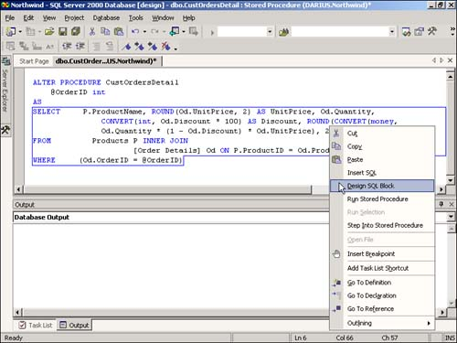

2.7 Create Stored Procedures
Stored procedures allow you to perform bulk operations on records, such as updating, inserting, and deleting data as needed. This tutorial shows you how to create stored procedures as well as how to test them from within the Server Explorer.
Viewing data is great, but you need to perform bulk operations such as adding, updating, and deleting records. You know that you will be using a stored procedure to perform these tasks, and you will be using them more than once in your application. How do you create stored procedures from VS?
Technique
Stored procedures are the way to go when you want add, delete, or update records or when you want to use a parameter. When you have a task that requires multiple actions, including temporary tables, stored procedures give you this ability. Stored procedures are powerful to use and easy to create.
Note
 |
To create stored procedures, you will use what is called Transact-SQL (T-SQL). Although this chapter will present some simple commands to show the interface used to create stored procedures from VS .NET, Chapter 6, "Creating Transact-SQL Commands," goes into more detail on the commands of the language.
|
As with views, you will use a designer within Visual Studio. Unlike the Views designer, the stored procedure designer is not visual initially, but more text oriented. However, you can pull up a visual designer after you are in the text designer.
When you're creating a new stored procedure, you will right-click on the Stored Procedures node in the database to which you want to add the stored procedure, and then you will choose New Stored Procedure. To edit existing stored procedures, you will highlight the stored procedure, right-click, and choose Edit Stored Procedure.
After the stored procedure is open, you will see a select statement or a number of T-SQL statements. If it is a new stored procedure, you can right-click and choose Insert SQL. You will be taken to the Query Builder, which happens to look like the View designer. If it is an existing stored procedure, you can place the cursor within a block of SQL code, which is outlined with a blue line, and choose Design SQL Block from the right-click menu, as shown in Figure 2.12.

You will then see the SQL block displayed once again in the Query Builder.
When specifying parameters that can be used as criteria in stored procedures, you will use the @ symbol in front of the parameter name, and declare them at the top of your stored procedure. Again, you can see this in Figure 2.12.
Steps
For this How-To, you are going to create a simple Select statement with a parameter, listing customers for a given city. If you're not already there, open the Server Explorer and expand the Northwind database.
Right-click on the Stored Procedures node, and then choose New Stored Procedure. You will be taken into a new page that is a template for stored procedure text. You will see the following listed:
CREATE PROCEDURE dbo.StoredProcedure1
/*
(
@parameter1 datatype = default value,
@parameter2 datatype OUTPUT
)
*/
AS
/* SET NOCOUNT ON */
RETURN
Replace all the text displayed with the following:
CREATE PROCEDURE dbo.spListCustomersForCountry
@parCountry char
AS
Select * From Customers where Country = @parCountry
RETURN
With this, you can see the use of the parameter.
Save the stored procedure.
How It Works
To test the stored procedure that you just created, you can right-click on the block of code and choose Design SQL Block from the menu. You can then click on the Run Query toolbar button and fill in the parCity parameter with USA when the dialog box is presented. You will then see the information displayed in the Results pane.
You will see examples of using stored procedures in the next chapter, which discusses using ADO.NET with SQL Server objects.
Comments
Although you can create stored procedures on-the-fly and not save them in the database, it is sometimes necessary and desirable to save them permanently so that you can use the same code in different places in your application.